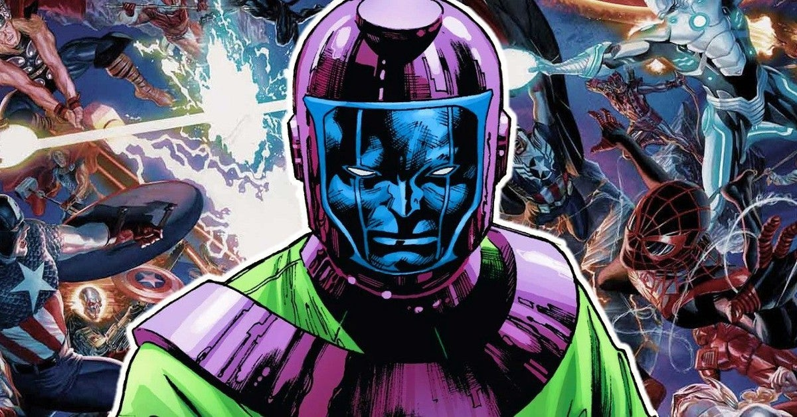
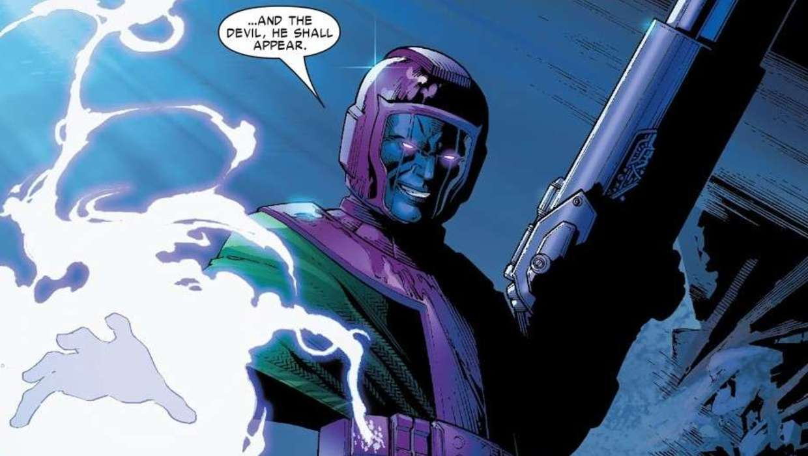
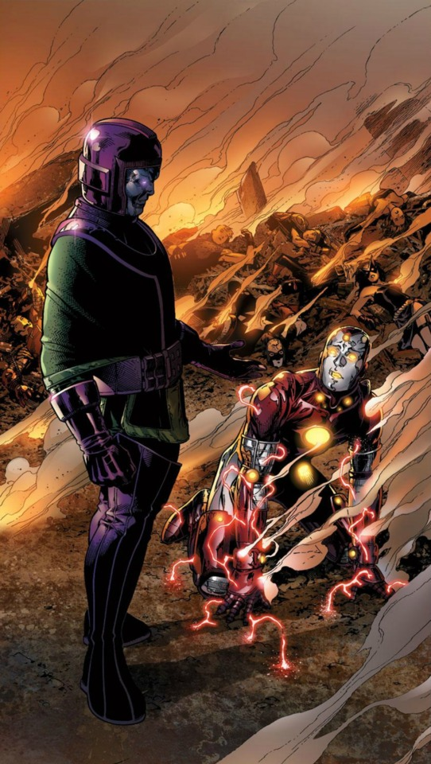

The Survivor.
In the long timeline of the Marvel Universe, fans have witnessed the war between Kang the Conqueror and his future self, Immortus, play out for decades. And in the background, the Time-Keepers have alternately been Immortus’ masters (or enemies) depending on his relationship to Kang. But there’s yet one more player in this cosmic game that we know very little about: He Who Remains.
In the vast library of comics on Marvel Unlimited, there are clues that can shed some light on He Who Remains—who he is,
what he actually wants, and what his existence means for the Multiverse.
Kang! Kang! Kang!
The fact that Kang was created by Jack Kirby and Stan Lee in the early days of Marvel Comics means you can revisit these two Rama Tut origin stories with ease in trade or online.
In THOR (1966) #245, Thor: God of Thunder, Jane Foster, and their companions travelled to the Citadel at the End of Time in a bid to prevent the existence of the Time-Twisters. That’s where they encountered He Who Remains.
By his own admission, He Who Remains is the last of his race and the only guardian left at eternity’s end
It was also established that He Who Remains was the final director of the Time Variance Authority. That implies that he is human, but without proof, it’s just speculation.
UNIVERSE X (2000) #9
The alternate reality story, told in UNIVERSE X (2000) #9, put forth the notion that He Who Remains is a “being who was there at the beginning,” and is guaranteed to be there when “all things end.”
WHAT DOES HE WHO REMAINS WANT?He Who Remains isn’t out to save the universe, because it will always come to an end. Instead, He Who Remains wants to pass on the collective knowledge of this universe to the universe that will replace it in the hopes that the new inhabitants won’t make the same mistakes as their predecessors.